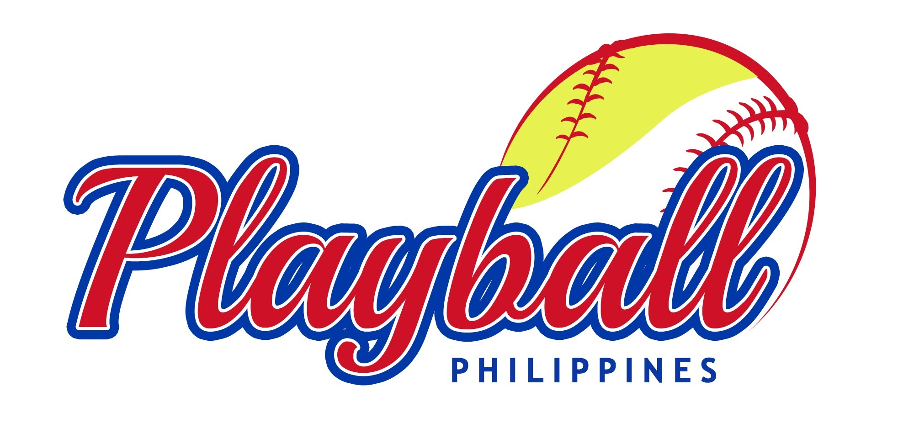

Philippine youth baseball opens a new national pathway
Regional leagues, schools, academies, and families get a central place to follow schedules, standings, and athlete stories.
Explore the player pathway
Join the HubOfficial digital ecosystem for Philippine baseball and softball
Connecting every player, coach, umpire, league, parent, and fan.
Search & discovery
Latest news
PABA updates, school competitions, local leagues, player features, and international coverage in one editorial feed.
Regional leagues, schools, academies, and families get a central place to follow schedules, standings, and athlete stories.
Explore the player pathwayKeep tabs on camp invites, clinics, and federation announcements.
Fixtures, rosters, and results built for fast publishing.
Community stories sit beside the scores that matter.
Events calendar
Designed for tournaments, clinics, tryouts, camps, seminars, umpire clinics, and Baseball5 activities.
Tournament / 12U-18U / Metro Manila
Clinic / Girls youth / Cebu
Umpire clinic / Open / Davao
Tournament hub
Bottom 6th, 1 out, runner on second
Directory
Filter by location, category, and age group for players, coaches, umpires, academies, clubs, schools, and colleges.
Shortstop / Manila High / 18U
Coach / Quezon City / Level 2
Umpire / Region VII / Accredited
Dedicated softball section
Blu Girls updates, women's competitions, youth softball, slow-pitch community, national team news, rankings, events, and development programs.
Video highlights
Photo galleries, interviews, documentary features, highlight reels, podcasts, press releases, and downloadable media kits.
Learn baseball
Rankings preview
Youth, high school, college, club, regional, national, batting, pitching, and historical performance can share one ranking system.
| Rank | Name | Region | Rating |
|---|---|---|---|
| 1 | Manila Green Sox | NCR | 98.4 |
| 2 | Cebu Diamond Club | VII | 95.8 |
| 3 | Davao South Sluggers | XI | 93.2 |
Featured facilities
Baseball field / batting cages / booking-ready profile
Long-term ecosystem